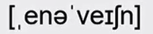
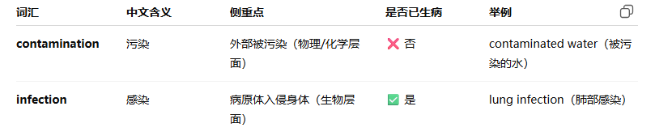

disdain /dɪsˈdeɪn/ n./v. 鄙视，蔑视
She looked at him with disdain, unable to hide her contempt（蔑视;鄙视;轻视;轻蔑） and disapproval她轻蔑地望着他，无法掩饰自己的蔑视和不认同。
a disdain for the law 对法律的藐视
共 50 个词条 · 2 张附图（含音标截图）
disdain /dɪsˈdeɪn/ n./v. 鄙视，蔑视
She looked at him with disdain, unable to hide her contempt（蔑视;鄙视;轻视;轻蔑） and disapproval她轻蔑地望着他，无法掩饰自己的蔑视和不认同。
a disdain for the law 对法律的藐视
recap /ˈriː.kæp/ /ˌriːˈkæp/ v. 扼要重述;摘要说明;概括
The team leader gave everyone a quick recap of the plan before they went into the meeting在开会之前，组长给大家快速概括了一下计划。
recap on what we've decided so far概括一下到目前为止我们所作的决定
restrain /rɪˈstreɪn/ v.制止，阻止;克制，抑制
The police officer had to restrain the agitated(/ˈædʒ.ɪ.teɪ.tɪd/焦躁不安的，恼怒的) suspect to maintain order and ensure everyone's safety.为了维持秩序，确保每个人的安全，警察不得不制服激动的犯罪嫌疑人。
restrain his anger 压制住怒气
annoy /əˈnɔɪ/ v使恼怒，使烦恼;打扰
The constant noise from construction work began to annoy the residents.建筑工程持续不断的噪音开始惹恼居民。
make a note of the things that annoy you 把让你心烦的事记下来
scope n.范围，领域;机会
After months they still had not solved the crime, so the police decided to widen the scope of the investigation.几个月之后他们依然没有破案，因此警察决定扩大搜查范围
beyond the scope of our investigation 超出我们的调查范围
field n.领域
microscope n.显微镜 telescope n.望远镜
compromise /ˈkɒm.prə.maɪz/n./v.妥协; 折中 放弃;背离，违背;降低
I don't always share the same views as my team members, but we always find a way to reach a compromise我与团队成员并不总是观点一致，但是我们会找到方法达成妥协。
a compromise solution 一个折中方案
concede /kənˈsiːd/v.承认;让步
enervation

n.衰弱;虚弱;削弱He felt a sense of enervation and frustration (/frʌsˈtreɪ.ʃən/（因不能满足需求而）沮丧；令人沮丧的事物，阻止计划实现；防碍成就获得，（因不能满足需求而）沮丧；令人沮丧的事物)after failing the exam.没有通过考试使他感到非常疲惫和挫败。
either（/ˈaɪ.ðər/ /ˈiː.ðər/ 两个读音都可以） enervation or enjoyment 沮丧或者快乐 这是一组反义词
the enervation of soil 土壤的退化
neutron /ˈnjuː.trɒn/ n.中子
We learned in physics that a neutron decays into a proton(/ˈprəʊ.tɒn/).我们在物理学中学过中子会衰变为质子。
be made up of neutrons and protons 由中子和质子组成
the discovery of the neutron 中子的发现
parallel /ˈpær.ə.lel/ v.平行;相似//平行就是差不多的意思 adj.平行的;类似的
In the poem he drew an interesting parallel between emotions and the ocean waves.在这首诗中，他把情感和海浪进行了有趣的对比。
parallel lines 平行线
paralleled adj.平行的;相同的
unparalleled adj.不可比拟的;空前的
phenomenon /fəˈnɒm.ɪ.nən/ n.现象;杰出人才
The Northern Lights that appear in the sky at certain times of year around Alaska, are a fascinating and beautiful phenomenon.
北极光会在每年的特定时间出现在阿拉斯加地区的上空，这是一种迷人而美丽的现象。
scientific explanations of natural phenomena(注意，这是复数) 自然现象的科学解释
audit n.v. 审计; 查账;审查
The accountants were preparing for the annual external audit of the company accounts会计师们正在为公司账目的年度外部审计做准备。
an annual audit 年度审计
a tax audit 税项审计
complex /ˈkɒm.pleks/ /kəmˈpleks/ adj.复杂的;合成的;复合的
A good logical and mathematical knowledge is key to solving complex equations.优秀的逻辑和数学知识是解决复杂方程的关键。
complex machinery(/məˈʃiː.nər.i/) 结构复杂的机器
the complex structure of the human brain 错综复杂的人脑构造
Their story, though not as spectacular（/spekˈtæk.jə.lər/壮观的，壮丽的;令人惊叹的，非常大的，巨大的;惊人的） to the eye, will surely turn out to be as subtle and as complex.也许表面看来它们的故事没有那么辉煌多彩，但一旦公之于众必定也是同样的精妙而复杂。
tranquil /ˈtræŋ.kwɪl/ adj.平静的;安静的;稳定的
The lakeside resort（/rɪˈzɔːt/度假胜地;旅游胜地） was a tranquil place to enjoy the holiday away from the city.湖边的度假村是一个远离城市、安静度假的地方。
a tranquil scene 一副静谧的景象
abound /əˈbaʊnd/ v.大量存在;富于
The forest abounds with a diverse range of plant and animal species.森林里有大量的、各种各样的动植物。
abound with fish 盛产鱼类
prodigious /prəˈdɪdʒ.əs/ adj.巨大的，庞大的
The young pianist displayed prodigious talent, captivating the audience with her virtuoso (/ˌvɜː.tʃuˈəʊ.səʊ/ n. （尤指演奏乐器或表演的）名家，能手 adj. 熟练的;精湛的)performance这位年轻钢琴家表现出了惊人的才能，以精湛的演奏令观众着迷。
a prodigious achievement 一项惊人的成就
these prodigious accomplishments（/əˈkʌm.plɪʃ.mənt/成就；成绩，完成；实现，造诣;技能;才华） 这些伟大的成就。
verify v. 核实; 查证
On most apps you need to have a message sent to your phone number so that they can verify your user status for security在大多数应用中，出于安全考虑，你的手机号码需要收到一条信息，这样才能验证你的用户状态。
verify that there is sufficient memory available核实有足够的存储空间
confirm v.证实
verification /ˌver.ɪ.fɪˈkeɪ.ʃən/ n.证明，证实
ascertain /ˌæs.əˈteɪn/ 弄清，确定，查明，确信 老师说这个也可以拿来同义替换
cable n.电缆;缆绳
Wireless technology is a real innovation(/ˌɪn.əˈveɪ.ʃən/新观念;新方法;（新观念或方法的）创造，使用)-you no longer have to worry about so many wires and cables running across your desk at work无线技术是一项真正的创新，你再也不用担心办公桌上有那么多电线和电缆了。
overhead cables 高架电缆
underground cables地下电缆
Each turbine (/ˈtɜː.baɪn/涡轮机，叶轮机，透平机)will be mounted on a tower which will connect to the national power supply grid via underwater cables.每个涡轮被安装在塔上，这里通过水下电缆与国家电网连接。
transplant v. /trænˈsplɑːnt/ n. /trænˈsplɑːnt/ 移植;迁移
After the liver transplant he made a relatively steady recovery肝脏移植完成后，他恢复得相对稳定。
a heart transplant operation 心脏移植手术
pitch /pɪtʃ/ n.体育场;音高;推销语v投，掷，扔；推销
The salesperson delivered a compelling （/kəmˈpel.ɪŋ/（理由、论证等）令人信服的，很有说服力的，引人入胜的;激动人心的;扣人心弦的）pitch to potential customers.销售人员向潜在客户进行了令人信服的推销。
a rugby pitch 橄榄球场
glacier uk /ˈɡlæs.i.ər/ us /ˈɡleɪ.ʃɚ/ /ˈɡleɪ.si.ɚ/ n.冰河，冰川
The massive glacier slowly advanced, carving （/ˈkɑː.vɪŋ/）the landscape with its icy （冰冷的）presence(/ˈprez.əns/出席，在场;（事物的）存在，出现，冥冥中有人的存在感，（对形势观察控制的）一队警察（或部队），仪态，风度;气质)巨大的冰川缓慢前进，以其冰冷的存在雕刻着景观。
upper surface of glacier 冰川表面上层
The slow but steady movement of glaciers tends to destroy anything at their bases, so the team focused on stationary patches of ice, mostly above 1400 metres.缓慢而稳定的冰川移动往往会破坏其底部的所有东西，因此科考团队主要专注于海拔1400米以上的静止冰块。
longevity /lɒnˈdʒev.ə.ti/ n.长寿;寿命 , 长期受欢迎
Ancient priests(/priːst/神父，牧师，司铎;（基督教以外的）神职人员) used to believe that consuming heavy metals induced longevity古代的祭司们曾经认为，食用重金属可以长寿。
the longevity of the company 公司的悠久历史
bargain /ˈbɑː.ɡɪn/ n.便宜货;协议，交易v 讨价还价，谈判
They negotiated (/nəˈɡəʊ.ʃi.eɪt/（就…）谈判，（就…）磋商，解决（难题）)a bargain price for the antique(/ænˈtiːk/古物；古董；古玩) at the flea (/fliː/蚤，跳蚤)market.他们在跳蚤市场上把那件古董谈到了便宜的价钱。
keep your side of the bargain 遵守你方协议
vain /veɪn/ adj.虚荣的，自负的;徒劳的
He was vain about his appearance, spending hours in front of the mirror. 他对自己的外表很在意，经常花好几个小时对着镜子。
in a vain attempt to finish on schedule徒劳地试图按期完成工作
prejudice /ˈpredʒ.ə.dɪs/ n.偏见
There are big trends in the world today focused on trying to promote equality and tolerance and reduce racial (/ˈreɪ.ʃəl/种族的)prejudice如今全球的大趋势是推崇平等与宽容，减少种族歧视。
a victim of racial prejudice 种族偏见的受害者
bias /ˈbaɪ.əs/ n.偏见
Pride and Prejudice 傲慢与偏见
racism /ˈreɪ.sɪ.zəm/种族歧视
region /ˈriː.dʒən/ n.地区;范围
The region attracts a lot of tourists who come to see the famous mountains这个地区吸引了大量前来参观有名山脉的游客。
one of the most densely populated(/ˈpɒp.jə.leɪ.tɪd/有人居住的) regions of North America北美人口最稠密的地区之一
pains in the abdominal (/æbˈdɒm.ɪ.nəl/腹部的)region 腹部的疼痛
regional adj.地区的;当地的
aggressive /əˈɡres.ɪv/ adj.侵略性的;有进取心的，好斗的;富于攻击性的;挑衅的
Tigers are incredibly cute (/kjuːt/可爱的，娇小可爱的，逗人喜爱的)animals when they are young, but they can also be highly aggressive, especially when they're hungry or provoked(/prəˈvəʊk/激起，引起，激怒，挑衅).老虎小的时候是非常可爱的动物，但它们也有很强的攻击性尤其是当它们饿了或被激怒时。
an aggressive advertising campaign一场声势浩大的广告宣传活动 （前面很早就讲过这个短语表达）
liver n. 肝脏
The liver plays a crucial role in detoxifying (/diːˈtɒk.sɪ.faɪ/解毒，消除负面影响)the body and metabolizing(/məˈtæb.əl.aɪz/新陈代谢) nutrients肝脏在身体排毒和代谢营养物质方面起着重要作用。
liver cancer 肝癌
grind v.磨碎，碾碎;摩擦
He used a mortar(/ˈmɔː.tər/砂浆，灰浆，臼，研钵) and pestle （/ˈpes.əl/杵；碾槌）to grind the spices（/spaɪs/（调味）香料调剂品；额外的刺激（或趣味），（毒品）人造大麻，vt. 在…中加香料） into a fine powder.他用研钵和杵把香料磨成细细的粉末。
to grind coffee 将咖啡磨粉
break up and grind into powder 打碎磨成粉末
aesthetic /esˈθet.ɪk/ /iːsˈθet.ɪk/ 两个读音都可以adj.美的;美学的;审美的
It is a place of incredible aesthetic beauty, with rolling hills picturesque（/ˌpɪk.tʃərˈesk/（漂亮的像画一样，尤指某地）美丽的，古色古香的） views and incredible tourist attractions（吸引（力）;有吸引力的事物）这是一个有着令人难以置信的美感的地方，有起伏的山丘、如画般的景色和令人惊叹的旅游景点
an aesthetic appreciation of the landscape 用审美的眼光欣赏风景
aesthetics n.美学
signify /ˈsɪɡ.nɪ.faɪ/ v.表示；意味；预示 ，很重要，要紧
The decision to employ more technical staff in the department signified a fundamental change in their priorities.在这个部门招聘更多技术人员的决定意味着他们的工作优先级发生了根本变化。
signify a radical（激进的;过激的;极端的，根本的；彻底的，完全的） change 意味着巨大改变
mean v.意味着:意思是
spectacular /spekˈtæk.jə.lər/ adj. 壮观的，惊人的
The views of the landscape from the hotel windows were spectacular.从酒店窗户看到的景色非常壮观spectacular scenery 壮丽的景色
spectacle /ˈspek.tə.kəl/ n.景象;奇观;[p1.]眼镜
The energy use and carbon emissions this generates is spectacular and largely unnecessary这产生的能源使用和碳排放量非常巨大，并且很大程度上并无必要。
resemble /rɪˈzem.bəl/ v.类似;像
She resembles her father, facially, but in other respects（老师说，很多地方aspect和respect可以通用，但是respect还有尊重，重视的意思） she's not like him at all.她在外貌方面很像她的父亲，但在其他方面却一点也不像。
closely resembles her sister和她姐姐很像
assemble v.集合
assembly 组装；装配，组合体;总成（尤指为特定目的而经常）聚集在一起的人，（所有）与会者；集合，聚集，（美国某些州的）州众议院，
With its five distinct(/dɪˈstɪŋkt/显著的，明显的；确实的，明显不同的，差别明显的) volcanoes, the island resembles a lunar landscape.这座岛屿拥有五座独特的火山，看上去像是月球的景色。
antique /ænˈtiːk/ adj.古老的，古董的 n. 古物，古董
The antique shop displayed a wide selection of vintage (/ˈvɪn.tɪdʒ/最佳的，最典型的，经典的, （酒）佳酿的，上等的，标明酿制年份的)item sat quite high prices.这家古董店以相当高的价格陈列着各种各样的古董。
a genuine antique 一件真古董
entwine /ɪnˈtwaɪn/ v.盘绕，缠绕;密切相关
Some creeping （/ˈkriː.pɪŋ/缓慢行进的;悄然进行的;逐渐发展的）plants entwine themselves around sticks as they grow.一些蔓生类植物在生长过程中会缠绕在杆子上
became entwined with （这个短语通常用在一些比较抽象的事物上面）management 与管理交织在一起
The history of human civilization is entwined with the history of the ways we have learned to manipulate（/məˈnɪp.jə.leɪt/） water resources人类文明的历史是与我们学习用何种方式使用水资源的历史交织在一起的。
retire v.退休;退出;撤退
He had worked hard since he was about 20 years old and was lucky enough to be able to retire young and relax for the rest of his life.他从大约20岁起就一直努力工作，幸运的是，他能够早早退休轻松地度过余生。
retire as editor of the magazine 从杂志编辑的职位退休
scarce /skeəs/ adj.缺乏的，不足的 adv. 仅仅;几乎不 约等于lack
Food was scarce in the country and they had begun to experience a terrible famine(/ˈfæm.ɪn/饥荒;饥荒时期)这个国家食物匮乏，他们开始经历一场可怕的饥荒。
scarce resources稀缺资源
submerge /səbˈmɜːdʒ/ v.淹没;浸入;潜入水中 emerge是出现浮现，submerge是沉下去
The towns were almost submerged in water when the dam(堤坝，水坝) broke水坝决堤时，城镇几乎被水淹没了。
be submerged by floodwater 洪水淹没
implication /ˌɪm.plɪˈkeɪ.ʃən/ n.含义;暗示;影响
The implications of the new tax reforms are most concerning for middle-class, middle-income wage(（尤指支付给体力劳动者并通常按周计算的）工资，工钱，报酬) earners新税收改革的影响与中产阶级、中等收入的人群最为相关。
consider the wider implications of their actions考虑他们的行动带来的更广泛影响
implicate v.暗示
International bodies like the United Nations and the European Union have begun to develop policies concerned with children's right to play, and to consider implications for leisure facilities and educational programmes.联合国和欧盟等国际机构已经开始制定与儿童游戏权利相关的政策并开始考虑娱乐设施和教育项目的意义。
complementary /ˌkɒm.plɪˈmen.tər.i/ adj.补足的;互补的
The living room was painted in two strong complementary colours.客厅被刷成两种高度互补的颜色。
two complementary strategies 两种相辅相成的策略
This option would not be accompanied by complementary measures in the other modes of transport.不会对其他运输方式采取任何补充措施
handicap /ˈhæn.dɪ.kæp/ n.障碍;不利条件v.妨碍，阻碍
Not being able to speak English today is a real handicap if you want to work internationally如果你想在国际上工作，如今不会说英语是一个真正的障碍。
visual handicap 视力缺陷
disability n.缺陷
obstacle n.障碍
bacteria /bækˈtɪə.ri.ə/ n.细菌 单数：bacterium
If you get bacteria in a wound（/wuːnd/伤，伤口，问题;痛苦;创伤） it can cause an infection (/ɪnˈfek.ʃən/感染)and inflammation(/ˌɪn.fləˈmeɪ.ʃən/炎（症）).如果伤口上有细菌，会引起感染和炎症。
avoid contamination（/kənˌtæm.ɪˈneɪ.ʃən/弄脏，污染;玷污） with bacteria 避免细菌感染

contamination happens outside the body, infection happens inside.
污染发生在体外，感染发生在体内。
statement n.声明;陈述
The foreign secretary(/ˈsek.rə.tər.i/部长;大臣，秘书，（英国）国务大臣（同 Secretary of State）) gave an official statement about the new policy on television last night.外交大臣昨晚在电视上就这项新政策发表了正式声明。
make a statement to the press 向新闻界发表一份声明
state n.状态;州 v.陈述;声明
expel /ɪkˈspel/ v.开除；驱逐；排出
The school decided to expel the student for repeated disciplinary（/ˌdɪs.əˈplɪn.ər.i/纪律的;惩戒的） issues.由于屡次违规行为，学校决定开除这名学生。
be expelled from school at 15 在15岁时被学校开除
By 1658,they had permanently expelled the Portuguese（/ˌpɔː.tʃəˈɡiːz/） from the island, thereby（/ˌðeəˈbaɪ/因此，由此；从而） gaining control of the lucrative（/ˈluː.krə.tɪv/赚钱的，盈利的） cinnamon （/ˈsɪn.ə.mən/肉桂，桂皮；肉桂粉）trade.到1658年，他们已经永久性地将葡萄牙人从岛上驱逐了出去由此赢得了对这门一本万利的肉桂买卖的控制。
dump v.丢弃;乱堆n.垃圾场;废料堆场
He disposed of the old furniture at the local dump site.他在当地的垃圾场处理了旧日家具。
a nuclear waste dump 核废料储存场
dump file 转储文件
dump truck 自卸卡车
disposed of= deal with
slender /ˈslen.dər/ adj.苗条的，纤细的
He found that the plant's leaves are long and slender他发现这株植物的叶子很细长。
her slender figure 她苗条的身材
long, slender fingers 修长纤细的手指
wreck /rek/ v.破坏，摧毁n.沉船；残骸；遭到严重破坏的东西
The car was an absolute wreck after George crashed it into the wall at high speed.车被George以很快的速度撞到墙上，完全撞坏了
wreck the garden 毁掉花园
“was wrecked” 说明结果：被撞坏。
“was a wreck” 强调状态：变成了残骸、惨不忍睹。
distinct /dɪˈstɪŋkt/ adj.明显的;独特的;不同的，
There is a distinct difference between laziness (/ˈleɪ.zi.nəs/懒惰)and reduced motivation.懒惰和动力下降之间有明显的区别。
a distinct smell of gas 一股明显的煤气味
distinctive /dɪˈstɪŋk.tɪv/ adj.有特色的;与众不同的 这2个都是形容词，注意含义的不同，不要用错了
distinct像clear，distinctive像special
联合记忆：extinct /ɪkˈstɪŋkt/ adj.灭绝的;绝种的;熄灭的
拼写很像，别混：distinct = 清楚分明 / 不同；extinct = 已灭绝（an extinct species / volcano）。一个 d-「分得清」，一个 ex-「灭掉了」。
pragmatic /præɡˈmæt.ɪk/ adj.实际的;实用主义的，相当于practical，更偏向于实用主义
His approach was pragmatic and he was able to put emotions to one side他的方法是务实的，能够把情感放在一边。
a pragmatic approach to management problems对管理问题采取的务实做法
canoe /kəˈnuː/ n.独木舟
They paddled their canoe gracefully through the winding(/ˈwaɪn.dɪŋ/（道路或河流等）蜿蜒的) rivers他们优雅地划着独木舟，穿过曲折的河流。
paddle (/ˈpæd.əl/ n. （小船的）短桨，桨 v. 用桨划船) the canoe along the coast 划着独木舟沿海岸而行
fabulous /ˈfæb.jə.ləs/ adj.极好的;巨大的;传说的 ，还可以表达虚构的，想象的，虚幻的
It was a fabulous performance, full of acrobatics （/ˌæk.rəˈbæt.ɪks/杂技表演）and amusing （/əˈmjuː.zɪŋ/好笑的，有趣的;引人发笑的）skits（/skɪt/幽默短剧）.
那是一场精彩绝伦的演出，有许多杂技表演和滑稽的小品
fabulous wealth 巨额财富
acrobat 杂技演员